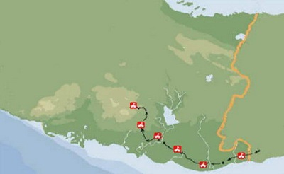
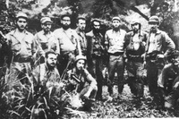

Fidel Castro se reúne con los comandantes Camilo Cienfuegos y Ernesto Guevara y les explica el plan invasor. Se inició la formación de las columnas: Antonio Maceo y Ciro Redondo.
10/08/1958
18/08/1958
Fidel Castro emitió la orden militar que designaba a Camilo Cienfuegos para conducir una columna rebelde desde la Sierra Maestra hasta Pinar del Río, en cumplimiento del plan estratégico del Ejército Rebelde.
21/08/1958
Este día Fidel Castro, Comandante en Jefe del Ejército Rebelde asigna al comandante Ernesto Guevara la misión de conducir desde la Sierra Maestra hasta la provincia de Las Villas una columna y operar en ese territorio con el plan estratégico del Ejército Rebelde.
21/08/1958
La columna 2 Antonio Maceo, dirigida por el Comandante Camilo Cienfuegos, partió de El Salto, en la Sierra Maestra, para iniciar la invasión a Occidente.
31/08/1958
Inicia la campaña invasora la columna 8 Ciro Redondo, al mando del comandante Ernesto Guevara.
7/10/1958
Arribo de la columna 2 Antonio Maceo, conducida por el Comandante Camilo Cienfuegos, a territorio villaclareño, después de atravesar el río Jatibonico para hacer alto y campamento en Llanada de Alunao.

08/10/1958
La columna 2 dirigida por Camilo Cienfuegos llega al Campamento permanente del destacamento "Máximo Gómez" en Jobo Rosado, allí se reúne con Félix Torres y sus hombres.
09/10/1958
El Che establece su campamento en el lugar conocido como El Tamarindo, en la finca El Escribano, hoy territorio de La Sierpe, en la provincia de Sancti Spíritus.
11/10/1958
A pesar del acoso y constante hostigamiento de las fuerzas de la dictadura, los integrantes de la Columna 8 prosiguen avanzando, y en horas de la noche llegan hasta el río Jatibonico del Sur, en esa época limite natural entre Las Villas y Camagüey, e inician su cruce.
12/10/1958
La columna 8 Ciro Redondo, dirigida por el Comandante Ernesto Guevara, entró en territorio de Las Villas.
12/10/1958
Se estableció campamento en el monte Blanquizal, en la finca El Toro, esa noche reanudaron la marcha tomando rumbo noroeste a campo traviesa y a 2.5 km cruzaron el camino del Cedro.
13/10/1958
Continúa la marcha por la finca Cañones hasta el batey La Barquilla, para seguir rumbo norte por el camino que conduce al batey de Peralejo hasta llegar a Monte Quemado, donde establecieron campamento, ya amaneciendo. Esa noche recorrieron 25 km. Se dedicó el día a crear condiciones para cruzar esa noche en botes el río Zaza.
14/10/1958
Esa madrugada la columna 8 cruzó el Zaza por el paso de Las Guásimas.
15/10/1958
Combate de fuerzas de la columna invasora al mando de Camilo Cienfuegos y fuerzas de la tiranía en los montes de la Caridad, norte villaclareño.
15/10/1958
La columna se mantuvo caminando todo esa madrugada, a las 5 de la mañana acamparon en la finca Marianao.
16/10/1958
La columna 8 cruzó la carretera de Trinidad a Sancti Spíritus y llegó hasta la falda de la loma del Obispo y prosiguió hasta Finca Cantú donde estableció campamento, alrededor de las 10 de la mañana.

16/10/1958
El Che instala la Comandancia de la columna primero en Gavilanes y después en Caballete de Casa, en la zona montañosa de la provincia de Las Villas. En el transcurso de los siguientes días, en coordinación con otras fuerzas revolucionarias que también luchaban en esa provincia, continuó desarrollando la ofensiva rebelde en esta zona central de Cuba.
24/11/1958
Ataque victorioso al poblado de Zulueta. Fue una acción conducida por el Comandante Camilo Cienfuegos, que logró tomar el cuartel tras asalto y luego se retiró del escenario con la promesa de regresar.

26-27/10/58
Ataque y liberación de Güinía de Miranda, primera acción guerrillera con fuerzas del ejército Rebelde y el Directorio Revolucionario 13 de marzo. En la noche del 26 al 27 de octubre de 1958, fuerzas del ejército Rebelde y el Directorio Revolucionario 13 de marzo, atacaron y tomaron el poblado de Güinía de Miranda, en plena montaña villaclareña. Así se demostraba que los combatientes recién llegados al Escambray estaban ya en disposición de acometer empeños mayores, y que era posible enfrentar y derrotar al ejército de la tiranía en sus propios cuarteles.

27/11/1958
Inicio de la Ofensiva de El Pedrero; operación militar desplegada por la tiranía con fuerzas y medios a gran escala. Fue aprobada el 23 del propio mes y se extendió hasta el 4 de diciembre. Concluyó como un rotundo fracaso, aumentando el prestigio de las fuerzas revolucionarias.
1/12/1958
Firma de el Pacto de El Pedrero, que selló la unidad entre el 26 de julio y el Directorio revolucionario 13 de marzo, como resultado de las gestiones y estrategia unitaria del comandante Ernesto Guevara. Al mismo se sumó posteriormente el Partido Socialista Popular.

16/12/1958
Las fuerzas del Directorio Revolucionario "13 de Marzo" sitiaron el cuartel de la tiranía en el poblado de Báez. Su guarnición defensora lo abandonó sin acción bélica.

16/12/1958
Se destruyó el puente existente sobre el río Sagua la Chica, en Falcón, a unos kilómetros de Santa Clara, así se impedía el avance de las tropas enemigas desde y hacia el este.
16/12/1958
Se inició la Ofensiva de Las Villas como secuencia de acciones liberadoras que condicionarían al triunfo del 1ro de enero de 1959 en esta provincia. En la pelea fue derribado el puente de Falcón y se inicio el combate por la liberación de Fomento. En los días posteriores igualmente otros puentes (Calabazas, Río Camajuaní, La Trinchera) serían dañados, lo que interrumpió importantes vías de comunicación.
18/12/1958
Victoria rebelde y toma del poblado de Fomento, primero de la campaña ofensiva y uno de los más férreos combates en la última etapa de luchas en el territorio central.
21/12/1958
Segundo ataque a Zulueta y liberación definitiva de Zulueta. Cumpliendo la palabra empeñada, los rebeldes al mando de Camilo Cienfuegos tomarán el poblado por segunda ocasión, coincidiendo este hecho con el inicio de la batalla de Yaguajay.
20-21/12/58
Desarrollo de la Plenaria Azucarera en Armas con presencia de representantes de obreros azucareros de las zonas liberadas y del resto del país, desde Camagüey hasta Pinar del Río, transcurrió en el poblado de General Carrillo, en el Frente Norte. Los acuerdos tomados respondían a las principales demandas de los obreros del sector en aquellos años de tiranía, y a la necesidad de combatir al régimen con la participación en la huelga general revolucionaria en todos los centrales y con el apoyo al Ejército Rebelde en el acopio de armas, ropas, zapatos, dinero, medicinas y alimentos.
21-22/12/58
Liberación en sucesión de los poblados de Guayos y Cabaiguán en la dirección este, dichas acciones abrieran la puertas hacia la toma de Sancti Spíritus. En Cabaiguán el comandante Guevara se fracturó un brazo y con esta imagen concluyó la batalla de Santa Clara.
23/12/1958
Fuerzas integrantes del comando Román Pando Ferrer del Directorio Revolucionario 13 de Marzo, realizaron exitosamente la toma del poblado de Manicaragua, que había sido reforzado con soldados destacados en Mataguá, tomado la víspera. Esta victoria significó el dominio de los accesos por el sur hacia Santa Clara.
23/12/1958
Fuerzas combinadas del Ejército Rebelde, del Directorio Revolucionario 13 de Marzo y del Movimiento revolucionario 26 de Julio, combatieron y liberaron al poblado de Placetas, coincidiendo con la liberación de Manicaragua. El propio comandante Ernesto Guevara participó en la toma del último reducto. Con la liberación de esta última población se acentuaba la incomunicación hacia el este de las tropas del régimen.

25/12/1958
Liberación de Sancti Spíritus cuyas fuerzas defensoras abandonaron sus posiciones para dirigirse hacia Jatibonico. Se destacó en las acciones el capitán Armando Acosta Cordero.
25/12/1958
Inicio del ataque que condujo a la liberación de Remedios al siguiente día. Fue particularmente difícil la toma de la Estación de Policías y el Ayuntamiento, con destaque especial para los integrantes del Pelotón Suicida.

26/12/1958
Liberación de Caibarién con fuerzas combinada de las columnas Ciro Redondo y Antonio Maceo, los últimos del Frente Norte. Estas acciones fueron acordadas en entrevistas de sus dos Comandantes, Camilo y Che.

27/12/1958
Reunión de los dirigentes de las organizaciones revolucionarias en el hotel “Las Tullerías” de Placetas donde el comandante Ernesto Guevara informó sobre la estrategia para la ofensiva restante y anunció el inicio del asedio a Santa Clara el día siguiente 28 de diciembre.

27/12/1958
Se produjo tras intenso combate la toma de Santo Domingo, poblado del cual se retirarán los rebeldes con posterioridad. Las fuerzas atacantes fueron dirigidas por el comandante Víctor Bordón. Fue librado definitivamente el 31 de diciembre.

28/12/1958
En la madrugada de 28, las fuerzas rebeldes llegaron, como estaba previsto, a la Universidad Central de Las Villas. El Che estableció allí su estado mayor y definió de inmediato las tareas a cumplir por cada uno de los pelotones.

28/12/1958
Inicio de la batalla de Santa Clara. Con fuertes combates en diferentes lugares de la ciudad como la Embotelladora de Refrescos, el Escuadrón 31 de la Guardia Rural, así como en los alrededores de la Loma del Capiro, el Cuartel de los Caballitos o Cuerpo de Vigilancia de Carreteras y el Regimiento Leoncio Vidal.

29/12/1958
Descarrilamiento y rendición del Tren Blindado. Dicha acción se produjo en horas de la media tarde previo levantamiento de la línea férrea con un buldózer. Su tripulación de 408 hombres y el numeroso armamento quedó en manos rebeldes. Este día se rindió el Cuartel de Caballitos y el comandante Guevara trasladó la comandancia de la Universidad Central de Las Villas hacia el distrito de Obras Públicas.
30/12/1958
Después de tenaz resistencia se rindió a los rebeldes la guarnición del Gobierno Provincial ante el pelotón del teniente Alberto Fernández Montes de Oca. Los rebeldes al mando del capitán Rogelio Acevedo tomaron el edificio de la Cárcel Provincial, cercano a la Audiencia de Las Villas. En el combate por la toma de la Estación de Policía cayó el valeroso capitán jefe del Pelotón Suicida, Roberto Rodríguez Fernández, El Vaquerito.
31/12/1958
Culminación de la batalla de Yaguajay bajo el mando rebelde de Camilo Cienfuegos, luego de once días de fieros combates.
1/01/1959
Rendición de todas las posiciones pendientes en la batalla de Santa Clara: Escuadrón 31, Audiencia Provincial de Las Villas, clínica Martha Abreu, Aeropuerto y el Gran Hotel en el parque Leoncio Vidal. Al avanzar la mañana de ese día y después de varios parlamentos se rindió toda la dotación con su armamento en el Regimiento Leoncio Vidal. Culminó la Batalla de Santa Clara. Con su caída en manos del Ejército Rebelde, sin llegar a combatir, quedaba liberada la capital de la provincia y culminaba, en rotunda victoria, la Campaña de Las Villas, ya que Camilo había completado la liberación del Yaguajay el día 31.